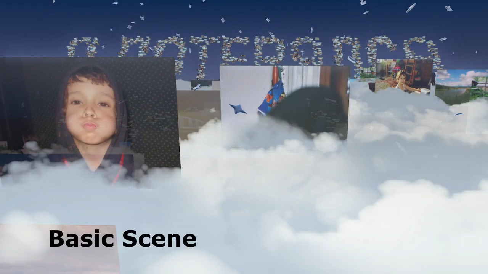

Вадим феденко
@c1337
16:00 → 22:00
25 09
я здесь
я такой
опа опа! тогда давай начнем Для начала скажу что переписку мы хотим выложить как статью на медиа (но если тебе бы не хотелось — сохраним в тайне)
я такой
И первый вводный вопрос Расскажи про себя вкратце, для тех, кто тебя не знает
я не против, выкладывайте
насколько детальные ответы нужно, в пару фраз, пару абзацев? насколько погружаться в детали
я такой
Давай пару абзацев
хорошо
я такой
но как чувствуешь, мы подготовили вопросы, которые занимают в целом 1-3 абзаца
вышло так, что вся жизнь крутилась вокруг графики. первые публичные проекты были в детстве, когда я делал игры в Game Maker где-то в 2006-ом году, на классических 5, 6, 7 версиях. а в 2014 ушел в пупы (RYTP), юмористический жанр роликов из ютуба, где люди коверкали на свой вкус различные видео. это было предтечьем щитпостинга в интернете, кажется, совсем несерьезным, но многие, кто сейчас делает ютуб, начинали как пуперы. ролики для сыендука собирают старые пуперы, многие работают композерами в анимационных студиях. получится такой пласт народного творчества, который подготовил в снг топ специалистов по монтажу и анимции, потому что нишевые приемы которые пуперы ощупывали в 2010, к 2020 стали мейнстримом подачи информации в интернете, и пуперы оказались к этому наиболее подготовленными. на западе произошла схожая штука, бывшие западные пуперы (их отвилку зовут YTP - youtube poop), вроде EmperorLemon'a, стали известными блоггерами. тоже самое с ребятами, которые собирали MLG ролики. у меня стиль пупов всегда клонился в сторону графики и визуала (тут примечание: ролики публиковались на pisok shortz и pisok RYTP, с тех пор каналы были удалены ютубом, но подписчики сделали канал с перезаливами, их можно найти в ютубе). базу для нынешней работы с графикой дал именно тот опыт создания пупов
